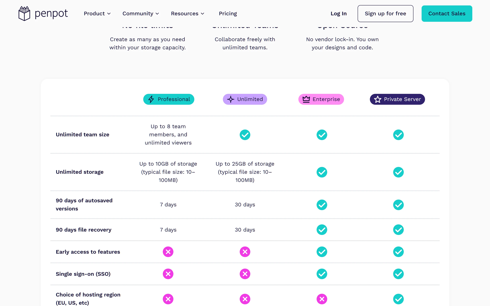
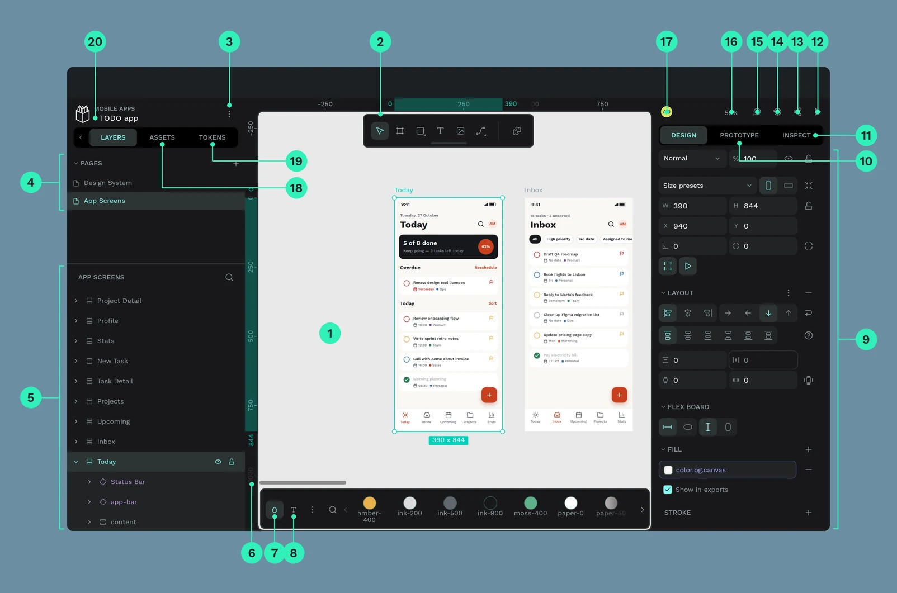
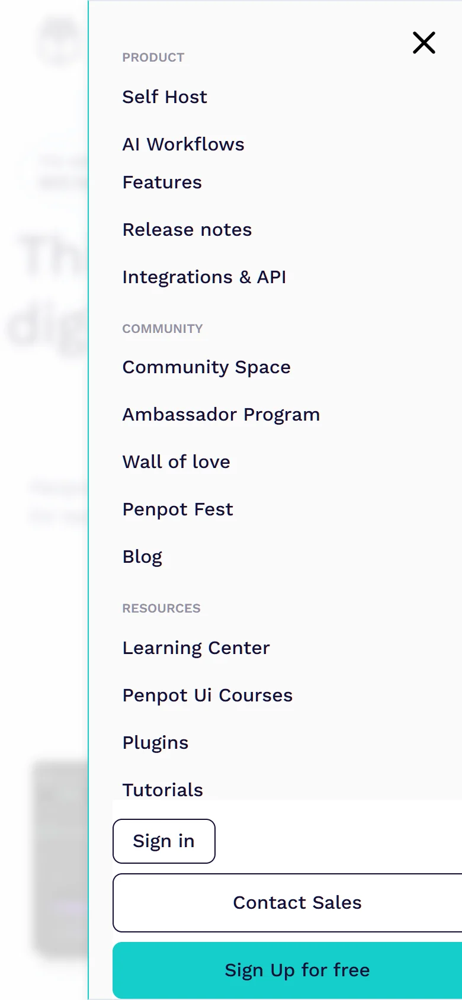
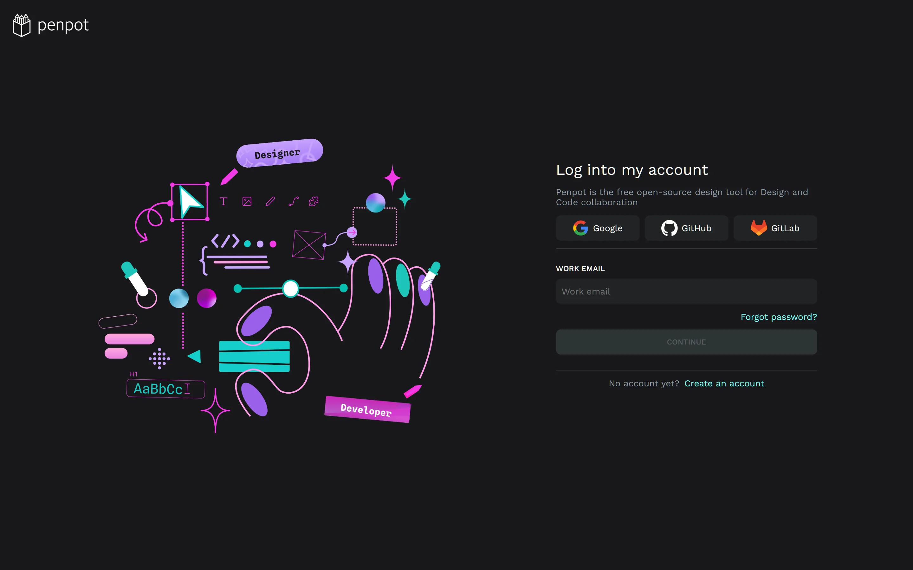

1
「上限なし」なのに「8人まで」
ねだんの ひょうで、行の 名まえと 中身が ケンカしています。
たとえると… 「いくらでも 入る はこ」と 書いてある はこに、「8こまで」と 書いてある。
行の なまえUnlimited team size
中身Up to 8 members
しゃしんで 見る

デザインを つくる アプリです。
Figma と おなじ しゅるい。でも コードが ひらかれていて、
じぶんの サーバーでも つかえます。
Penpot は、3つの 部屋で できています。やることは 1つずつ。
ひだり・まんなか・みぎ・うえ。それだけ おぼえれば つかえます。

ここは そのまま まねしたい ところ。
だれでも 中を 見られます。デザインの ルールも ぜんぶ 公開。
「Self-host install」で、自分の サーバーに 入れられます。
339この「きまり」で できています。だから 画面が バラバラに ならない。
これは ぼくたちが 見つけた「なおした方が いいね」です。
ねだんの ひょうで、行の 名まえと 中身が ケンカしています。

見た目は ひょう。でも 中は ただの 四角の ならび。読みあげソフトには 行と 列が わかりません。
メニューの 下の ボタンが、画面の 右に 17px はみ出します。
はば 390px の 画面に、右はし 407px の ボタン

おす ところが 24px より 小さいと、ゆびで おしにくく なります。79この うち 65こが 小さいままでした。
機能ページの タブは、えらんでいる 場所が 下線の 色だけ。読みあげソフトには わかりません。
aria-selected = ありません
大きい 見出し（h1）が 2つ あって、1つは からっぽ。目次が ぐちゃぐちゃに なります。

むずかしい ことは いりません。ことばと 大きさを 直すだけ。
「Unlimited team size」→「Team size」。名まえと 中身を 同じ 意味に する。
リンクに 上下の すきまを たす。24px より 大きく するだけ。
タブに「いま ここ」を つたえる しるし（aria-selected）を つける。
かんたんに 3つ。